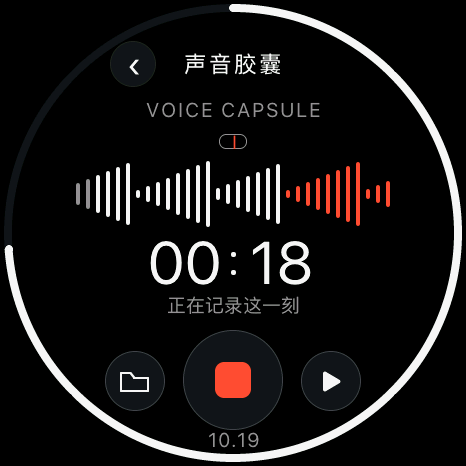
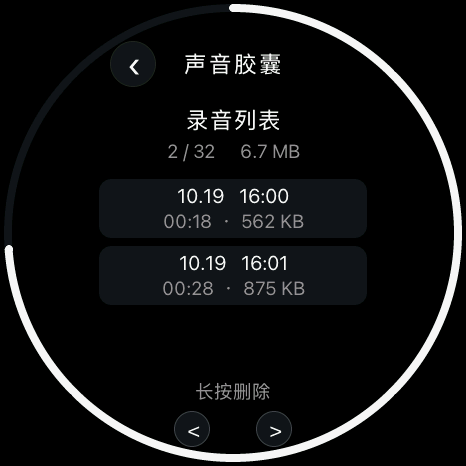
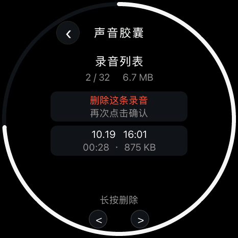

<!doctype html><html lang="zh-CN"><meta charset="utf-8"><meta name="viewport" content="width=1080"><title>声音胶囊</title><link rel="stylesheet" href="style.css">
    <main class="poster capsules" data-number="14"><header><div class="brand">soRound OS <span>明天 · 正式版见</span></div><div class="kicker">13 / 新应用 · 声音胶囊</div><h1>有些瞬间，<br>想留一点声音。</h1><p class="sub">录下、回放、整理，让一句话有个小小的容器。</p></header><div class="content"><div class="hero"><figure class=""><figcaption></figcaption></figure></div><div class="duo small-duo"><figure class=""><figcaption>录音列表 / 回放</figcaption></figure><figure class=""><figcaption>二次确认删除</figcaption></figure></div><p class="condition">使用条件：录音功能需先完成独立存储初始化。</p></div><footer><span>原生 UI 渲染 · 录音状态与波形为测试输入</span><span>14 / 10.23</span></footer></main></html>